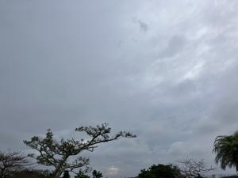

うるがいの話 ある日
最新: 第二級無線技術士【うるがいの話 ある日】とは 一日だけのプログです
『うるがいの話』の最新一日だけのプログで、通信料が少なく経済的だ。カニの画像をクリックすると全ての日付が載る『うるがいの話』サイトを表示します
|
|
【うるがいの話】 うるがい(ｳﾙｶﾞｲ urugai)とは、『もずくがに』の名前でとても大きくなります。 |
|---|---|
|
|
【カミマヤーの話】 猫のことを方言でマヤーといいます。カミマヤー（kamimayaa）とは、神の猫のことです。 |
|
【たながぁの音楽】 たながぁ（ﾀﾅｶﾞｰ tanagaa）とは手長えびのことで、何種類かあり大きいのは車 エビぐらいになります。 |

|
【ぶながぁの話】 ぶながぁ(ﾌﾞﾅｶﾞｰ bunagaa)とは、赤い髪の毛、赤い身体、そして身長は１ｍ２０ｃｍ ぐらい、川の蟹を食べているの目撃された。場所は沖縄県国頭郡大宜味村のと ある村僕の隣近所に住んでいる爺さんから、聞いた話です。 |
|
|
【ギーマの話】 ギーマ(giima)とは、山原の里山に咲くスズランに似た、 花を付けます。実は食べられます、 気が付くと口の周りが紫になっています。 |
2026年04月05日 (日）第二級無線技術士
15:46

私は、
第二級無線技術士の免許を持っています
テレビで
第二級陸上無線技術士の免許を見ました
違いは、なんですか
１９８３年交付の「第二級無線技術士」は、現在の制度では「
第二級陸上無線技術士」に相当します。
つまり、テレビで見た「第二級陸上無線技術士」は、現在の呼
び方であり、お持ちの資格と実質的には同じです。制度改正で
名称が変わりました。
「第二級無線技術士」が「第二級陸上無線技術士」に名称変更
された制度改正は、１９８９年（平成元年）１１月７日に公布
され、１９９０年（平成２年）５月１日に施行されました。
その施行日に、旧資格の「第二級無線技術士」を持っていた人
は、自動的に「第二級陸上無線技術士」の免許を受けたものと
みなされています。
どういたしまして。１９８３年取得ですと、かなり長く有効な
資格をお持ちですね。現在でも「第二級陸上無線技術士」とし
て通用します。